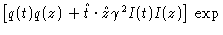

K.E. Schmidt
Department of Physics and Astronomy
Arizona State University
Tempe, AZ 85287
This note was published in IEEE Trans. on Antennas and Propagation, 44, 1298 (1996).
The following is in accordance with the IEEE copyright policies . This material is presented to ensure timely dissemination of scholarly and technical work. Copyright and all rights therein are retained by authors or by other copyright holders. All persons copying this information are expected to adhere to the terms and constraints invoked by each author's copyright. In most cases, these works may not be reposted without the explicit permission of the copyright holder.
© 1996 IEEE. Personal use of this material is permitted. However, permission to reprint/republish this material for advertising or promotional purposes or for creating new collective works for resale or redistribution to servers or lists, or to reuse any copyrighted component of this work in other works must be obtained from the IEEE.
By including the point charges at the ends of the nonplanar skew monopoles with sinusoidal current distributions, the expressions given by Richmond and Geary are simplified. The simplified expressions satisfy reciprocity.
| I(x) = , | (1) |
Since the current at the xb end is not zero, there is necessarily a point charge there which contributes to the electric field. Richmond and Geary neglected this contribution because it cancels with a similar term of opposite sign when monopoles are connected together to produce the continuous physical current. In this note, I show that adding these point charge contributions cancels one of the terms in the expression of Richmond and Geary. The result is that the Fik terms in Eq. 13 of reference 1 may be dropped since they cancel when summed over the terms making up the mutual impedance of the dipole. An added advantage is that the resulting monopole-monopole mutual impedance satisfies reciprocity so no additional bookkeeping is needed to keep track of source and observation monopoles. To demonstrate these statements I will follow Richmond and Geary and set up the system as they do, but keep the point charge terms in the fields.
| = | , | ||
| = | , | (2) |
|
cos( | (3) |
| = | , | ||
| d | = |
( | (4) |
|
= | (5) |
| z1 | = |
( | |
| z2 | = |
( | |
| t1 | = |
( | |
| t2 | = |
( | (6) |
| d1 | = | z2 - z1, | |
| d2 | = | t2 - t1. | (7) |
Richmond and Geary calculate the mutual impedance in the usual way by integrating the dot product of the current density and the electric field. The point charge contributions can be calculated similarly. An alternative method that displays reciprocity immediately and also simplifies the derivation of the expressions is given by writing the mutual impedance in terms of the scalar and vector potentials. The mutual impedance is
|
Z = dtdz(- | (8) |
|
q(z) = - | (9) |
Eq. 8 can be written in terms of exponential integrals. As in Richmond and Geary an E function is defined to be
|
E( | (10) |
The mutual impedance expression Eq. 8 is evaluated as
combinations of two kinds of integrals,
|
- st = exp( | (11) |
|
| |||
|
- exp(- | |||
|
+ E( | (12) | ||
R2 in Eq. 11 is the distance between the z2 point and the t point. The right hand side of Eq. 12 is evaluated at the four limits of the integration. The E function is defined above as being the integral from t1 to t2 , and this definition can be used for the last three terms of Eq. 12. In the first term, the roles of z and t must be interchanged; the first E function is the integral from z1 to z2 and the result at t1 is subtracted from the result at t2 . This reversal of roles comes from an integration by parts in deriving Eq. 12.
The mutual impedance
of two monopoles
is,
| Z = [ | |||
| + |
stszexp( | (13) | |
|
= d (cos( | (14) |
The Richmond-Geary expression, with the additional Fik terms,
is obtained
by dropping
the  function term in q(z) .
function term in q(z) .
As an aside, the expression for the mutual impedance between an electric current monopole and a magnetic current monopole[5] can also be derived using just Eq. 12. This impedance is proportional to the volume integral of the magnetic current dotted with the magnetic field from the electric current. Writing the magnetic field as the curl of the vector potential and using the identity
|
( x ) = sin( | (15) |
|
sin( | (16) |
The efficiency improvement can be estimated by assuming that the computation is dominated by the calculation of the exponential integrals. Dropping the Fik terms will reduce the number of exponential integrals needed to calculate the mutual impedance of an isolated dipole from 36 to 32 per monopole pair, giving roughly a 10 percent increase in efficiency. For a large structure, each monopole needs to be evaluated with the current equal to one at each end in turn except for those monopoles at the ends of wires. In this case, the number of exponential integrals required per monopole pair is reduced from 40 to 32 or a 20 percent savings. For the special case where the monopoles are skew coplanar, d is zero and the number of exponential integrals required drops from 24 to 16 for about a 30 percent reduction in computational cost.
Table I. The mutual impedance in ohms calculated for two v-dipoles in free space. The planes of the dipoles are parallel and the midpoints of the dipoles are separated by .01 wavelength. Each dipole consists of two monopoles of equal length (.1 wavelength for one set and .2 wavelength for the other) at an angle of 90 degrees. The four monopole mutual impedances (labeled 11, 12, 21, and 22) are shown, as well as the final dipole-dipole result Ztot . Four calculations are compared. These use Eq. 13 without the first term point-charge point charge interaction; Eq. 13; and lastly the Richmond and Geary expressions. RG1 is the Richmond and Geary result from integrating the E field from z with the current from t. RG2 corresponds to integrating the field from t with the current from z.
| Z | Eq. 13 w/o charge | Eq. 13 | RG1 | RG2 |
| 11 | 34.60 , 116.18 | 4.64, -360.02 | 5.32, -15.33 | 7.69, 61.32 |
| 12 | -29.92 , -153.15 | 0.04, 323.04 | -0.63, -21.64 | -3.01, -98.30 |
| 21 | -29.92 , -153.15 | 0.04, 323.04 | -0.63, -21.64 | -3.01, -98.30 |
| 22 | 34.60 , 116.18 | 4.64, -360.02 | 5.32, -15.33 | 7.69, 61.32 |
| Ztot | 9.36 ,-73.95 | 9.36, -73.95 | 9.36, -73.95 | 9.36, -73.95 |